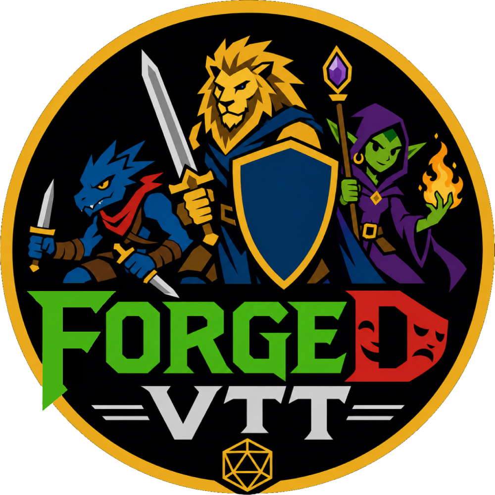

For the Game Master
Run the game from the Windows app. Set up maps, characters, monsters, and the tools your group needs.
Set up your table Download for Windows
Download for Windows
A tabletop for your next D&D night
ForgeD is a virtual tabletop: a shared online space for your D&D game. The Game Master hosts from the Windows app; players open your game link in a browser.
For Game Masters on Windows 10 or 11. Players don’t need to install the app.

Make room for adventureOne table, two ways to play
Run the game from the Windows app. Set up maps, characters, monsters, and the tools your group needs.
Set up your tableOpen the link from your Game Master in a browser. Move your character, roll dice, and play together.
How players joinMade for game night
Bring the parts of your session together, so your group can focus on the adventure.
Lay out maps, move tokens, and reveal places as the party explores.
Bring character sheets, spells, equipment, and creatures into the game.
Roll dice, follow initiative, and keep the group in sync.
Your next session is waiting